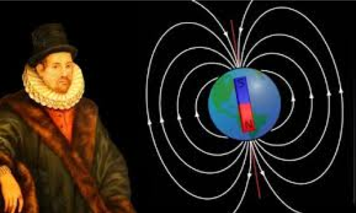

As 3 Leis de Kepler
4300156 - Gravitação
Anne Louise Scarinci
Chang, Eric, Gustavo, Ricardo
Instituto de Matemática e Estatística
Universidade de São Paulo
Linha do Tempo com os principais acontecimentos que influenciaram Kepler
- Defensor do Modelo de Copérnico
- Discípulo de Tycho Bacho
- Influenciado por diferentes pesquisadores da época, Galileu Galilei e William Gilbert, por exemplo
- Grande impacto nos estudos de gravitação que posteriormente foram aprofundados por Isaac Newton
“(..) símbolo de Deus pai, fonte de luz e calor, gerador da força que move os planetas nas órbitas, e por ser o universo helicêntrico geometricamente mais simples e satisfatório”
- Kepler nasceu em Well der Stadt, no ano de 1571
- Seguindo influências familiares, Kepler era protestante
Universidade de Tübingen
- Durante seus estudos na universidade, Kepler estudou sobre Aristóteles, Platão e os neo-platônicos.
- Um de seus professores foi Michael Maestlin, professor de astronomia que o apresentou o modelo de Copérnico.
O modelo de Copérnico
- Kepler aderiu ao copernicianismo sem hesitações
- Defendia que o sol devia estar no centro do mundo, por ser "(...) símbolo de Deus pai, fonte de luz e calor, gerador da força que move os planetas nas órbitas, e por ser o universo heliocêntrico geometricamente mais simples e satisfatório."
- Baseado neste modelo e em outros conceitos matemáticos conhecidos na época, escreveu o Mysterium Cosmographicum
- Alguns anos após a publicação do Mysterium Cosmographicum, Kepler se torna discípulo de Tycho Brahe, apesar de algumas divergências filosóficas.
Do círculo perfeito a Elipse
Aula de geometria em 1595

Kepler observou que a razão entre os círculos eram as mesmas que as das órbitas de Saturno e Júpiter
Representação das órbitas dos planetas utilizando os sólidos pitagóricos. Neste esquema, a órbita de Saturno é representada pela esfera mais externa; a órbita de Júpiter é representada pela esfera inscrita no cubo; a órita de Marte é representada pela esfera inscrita no tetraedro; e assim por diante.
Discípulo de Tycho e o estudo das órbitas dos planetas
Primeiro, estudou a órbita de Marte para a qual dispunha de mais informações. Procurou encontrar possíveis órbitas circulares que combinassem com os dados de que dispunha, utilizando de artifícios como os epiciclos.
O estudo de William Gilbert e o rompimento com as órbitas circulares
Foi em 1600 que William Gilbert publicou seu trabalho sobre o Magnetismo (De Magnete) que influenciou Kepler a abandonar os epiciclos e buscou simplificar os modelos das órbitas.
Kepler tentou ajustar os dados de tipos por órbitas circulares, conseguindo chegar a um ajuste com uma diferença de menos de 8 minutos de arco. Porém, os dados de Tycho tinham um desvio da ordem de um décimo de grau, o que não permitia um desvio de 8 minutos de arco.
Abandonando o círculo, Kepler buscou a experimentar outras formas como o oval e, posteriormente, a elipse colocando o sol em um dos focos. Assim Kepler chegou na sua lei, hoje denominada Primeira Lei de Kepler.
A primeira e segunda Lei de Kepler foram publicadas no livro Astronomia Nova em 1609.
1618: Harmonia dos Mundos
Regresso à busca do Plano Divino para a Criação do Universo
“os quadrados dos períodos de revolução de dois planetas quaisquer estão entre si como os cubos de suas distâncias médias ao Sol“${T^2 \over R^3} = k$
| Planeta | Período de Revolução (T) | Raio da Órbita (R) | $k = {T^2 \over R^3}$ |
|---|---|---|---|
| Mercúrio | 0,241 anos | 0,387 u.a. | 1,002 |